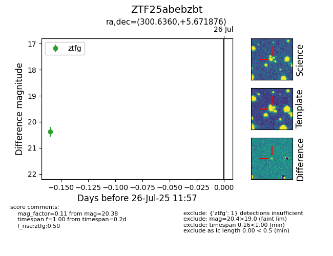

Target ZTF25abebzbt at 2025-07-26 11:57, see:
FINK: fink-portal.org/ZTF25abebzbt
Lasair: lasair-ztf.lsst.ac.uk/objects/ZTF25abebzbt
ALeRCE: alerce.online/object/ZTF25abebzbt
alt names
ZTF25abebzbt (ztf,fink)
coordinates:
equatorial (ra, dec) = (300.6360,+5.67188)
galactic (l, b) = (46.3744,-13.02183)
photometry
last ztfg=20.38
1 ztfg detections
